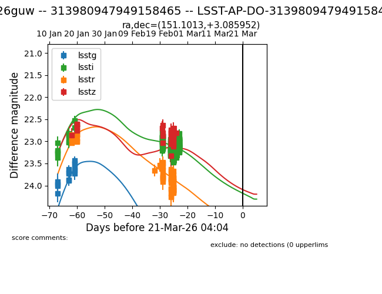
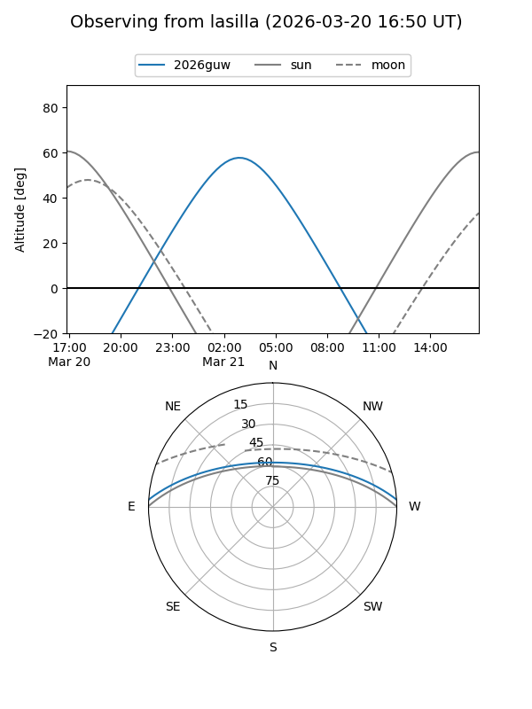
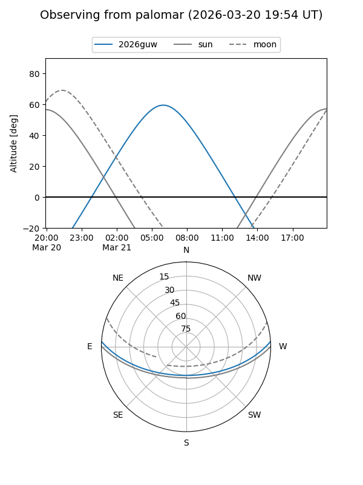

2026guw
Target 2026guw at 2026-03-21 04:07
Aliases and brokers:
TNS: link
YSE: link
alt names
LSST-AP-DO-313980947949158465 (lsst)
313980947949158465 (fink_lsst)
2026guw (tns,yse)
Coordinates:
equatorial (ra, dec) = 151.1013,+3.08595
equatorial (HMS+DMS) = 10:04:24.31,+03:05:09.43
galactic (l, b) = (236.6187,+43.43114)
Flags:
Photometry:
last lsstg=23.44, lssti=23.13, lsstr=23.86, lsstz=22.80
15 lsstg, 136 lssti, 56 lsstr, 34 lsstz detections
Lightcurve

Visibility


Additional plots